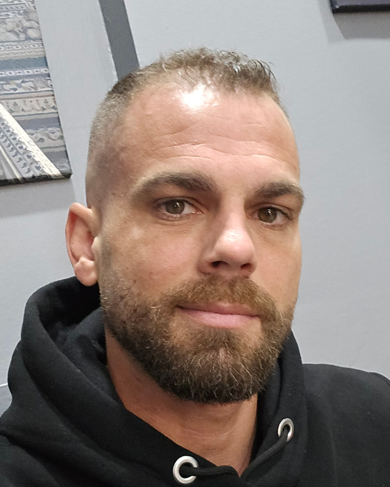

Schriftlich antworten
Bei Kundenanfragen über digitale Plattformen habe ich mich an gemeinsame Kommunikationsvorgaben gehalten und meine Antworten auf das jeweilige Anliegen abgestimmt.
BEWERBUNG & PORTFOLIO
Schriftliche Kundenbetreuung · Customer Support · Backoffice
Von Juli 2025 bis Juli 2026 habe ich Kundenanfragen auf digitalen Plattformen schriftlich beantwortet, vollständig im Homeoffice. Jetzt suche ich eine langfristige Festanstellung im Kundenservice oder Backoffice, in der ich von Deutschland aus remote arbeiten kann.

Dominic Pohl
Brieselang
Brandenburg
ÜBER MICH
Schriftlich kommt es für mich darauf an, eine Frage genau zu lesen und so zu antworten, dass der nächste Schritt verständlich ist. In der freiberuflichen Kundenbetreuung habe ich offene Anliegen selbst priorisiert und mich dabei an die Kommunikations- und Qualitätsvorgaben gehalten.
Heute beantworte ich Kundenfragen bei Lidl direkt in der Filiale. Als Vorarbeiter bei Harry-Brot habe ich zuvor Aufgaben im Team verteilt und logistische Abläufe organisiert. Beim Aufbau eines Gastronomiebetriebs in Thailand war ich für die Tagesplanung mitverantwortlich.
In meinem eigenen App-Projekt PairFlow beschreibe ich, was eine Funktion leisten soll, teste sie und dokumentiere Fehler. So arbeite ich mich auch in neue digitale Werkzeuge ein.
MEIN NÄCHSTER SCHRITT
Am liebsten betreue ich deutschsprachige Kunden per E-Mail oder Chat. Auch telefonischer Kundenservice und die Bearbeitung von Vorgängen im Backoffice kommen für mich infrage.
Als weitere Einstiegsmöglichkeiten interessieren mich virtuelle Assistenz, KI-Datenbewertung und Content-Moderation.
STÄRKEN
Bei Kundenanfragen über digitale Plattformen habe ich mich an gemeinsame Kommunikationsvorgaben gehalten und meine Antworten auf das jeweilige Anliegen abgestimmt.
Im Homeoffice habe ich meine laufenden Aufgaben selbst geordnet. Als Vorarbeiter habe ich auch bei hoher Auslastung entschieden, wie wir die Arbeit im Team verteilen.
Für PairFlow formuliere ich Anforderungen an Funktionen und überprüfe die KI-gestützte Umsetzung. Wenn etwas anders funktioniert als erwartet, halte ich den Fehler für die weitere Bearbeitung fest.
BERUFLICHER HINTERGRUND
seit
25 Std./Woche
Lidl · Deutschland
Ich beantworte Kundenfragen in der Filiale und arbeite an der Kasse. Je nach Bedarf unterstütze ich auch bei der Warenverräumung, im Backshop und im Lager.
–
Freiberufliche digitale Kundenbetreuung · Remote
Ich habe Kundenanfragen über digitale Plattformen schriftlich beantwortet. Im Homeoffice habe ich die offenen Anliegen selbst priorisiert und die vorgegebenen Kommunikations- und Qualitätsstandards eingehalten.
–
DOMSA Smoked BBQ · Thailand
Parallel zur freiberuflichen Kundenbetreuung habe ich am Aufbau des Gastronomiebetriebs mitgewirkt, Tagesabläufe mitgeplant und Kundenanliegen persönlich betreut.
–
Harry-Brot GmbH · Deutschland
Ich habe die Arbeit im Team verteilt, logistische Abläufe koordiniert und auf die Einhaltung von Qualitäts-, Hygiene- und Arbeitsstandards geachtet.
–
Weihe GmbH · Deutschland
Ich habe Waren kommissioniert, Stapler gefahren und nach den vorgegebenen Arbeits- und Sicherheitsabläufen gearbeitet.
2013 – 2017
ZASP Zustellagentur Spandau · Berlin
Ich habe Wareneingang und Warenausgang bearbeitet, Waren kommissioniert und das Lagerteam im Tagesgeschäft unterstützt.
PROJEKTE
EIGENES DIGITALES APP-PROJEKT
Eine App für Paare und ihre gemeinsamen Aktivitäten.
Verwendete Technologien im Projekt
Ich plane die Funktionen von PairFlow und begleite die technische Umsetzung mit KI-Coding-Werkzeugen. Flutter und Firebase lerne ich dabei praktisch kennen.
Ich beschreibe Anforderungen, teste die Funktionen und dokumentiere Abweichungen vom erwarteten Verhalten. Anschließend prüfe ich die überarbeiteten Ergebnisse.
FÄHIGKEITEN & TOOLS
Flutter und Firebase nutze ich im Rahmen eigener Projekte.
AUSBILDUNG
Euro Train Berlin
2009 – 2013
B.-Traven-Oberschule Berlin
2003 – 2007
SPRACHEN
KONTAKT
Wenn Sie eine Stelle im Kundenservice oder Backoffice mit vollständigem Homeoffice in Deutschland besetzen, freue ich mich über Ihre Nachricht.
dominic.pohl@gmx.de
Lebenslauf herunterladen (PDF)